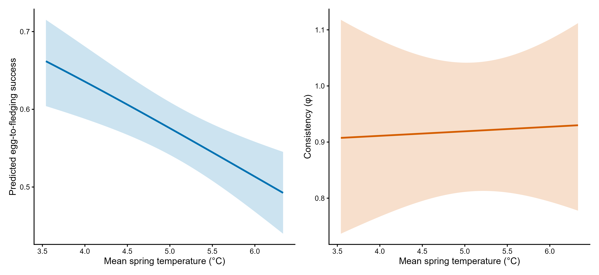
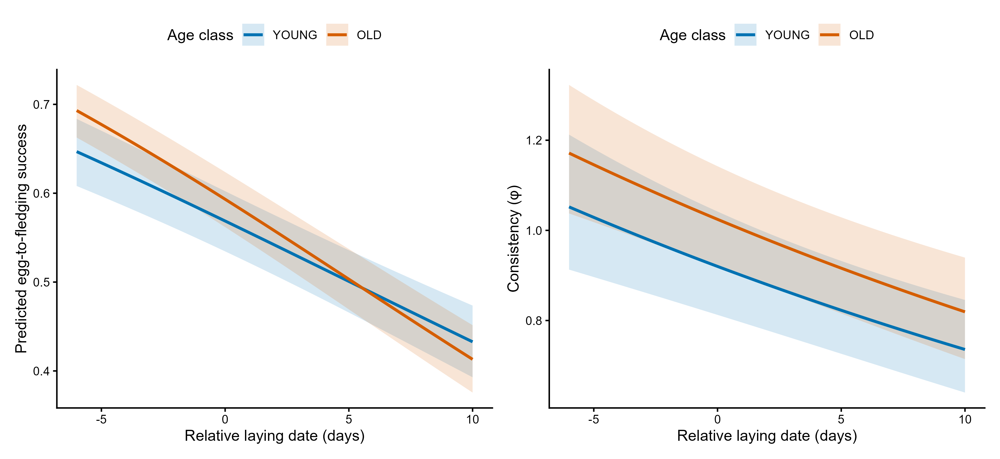
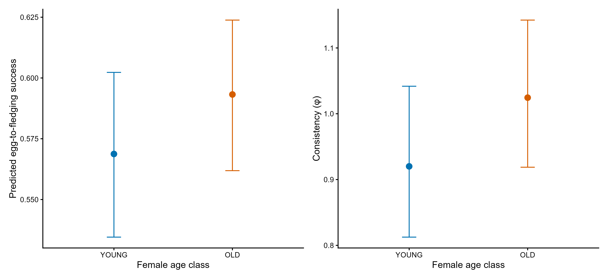
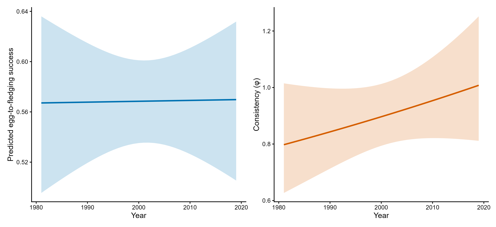

| model | n | df | logLik | AIC | BIC | delta_AIC | delta_BIC | LR_chisq | LRT_df | LRT_p |
|---|---|---|---|---|---|---|---|---|---|---|
| No fixed precision predictors + year RE | 9790 | 10 | -17108.73 | 34237.47 | 34309.36 | 31.97413 | 3.21766 | NA | NA | NA |
| Predictor-dependent precision + year RE | 9790 | 14 | -17088.75 | 34205.49 | 34306.14 | 0.00000 | 0.00000 | 39.97413 | 4 | 0 |
Fledging success
1 Data and reference model
The analysis includes 9,790 broods from 7,132 females in 39 seasons (1981–2019), including 2,315 complete failures (23.65%). The paired response is fledged and failed eggs, so the mean describes egg-to-fledging success, including complete failures.
Location contains relative laying date, age, their interaction, temperature and calendar year, with year and female random intercepts. Log precision contains relative date, age, temperature and calendar year, with a year random intercept. Annual temperature is shared by broods in the same year, and annual heterogeneity is allowed in both components, paralleling the clutch-size model. The two year effects are independent. Higher phi indicates lower extra-binomial heterogeneity at a given mean and clutch size; it describes breeding attempts, not within-female repeatability.
2 Fixed precision predictors with the same random structure
The null model has no fixed precision slopes but retains a year random intercept in precision and the identical location structure. The new LRT is chi-square = 39.9741 with 4 df, p = 4.382 × 10⁻⁸; AIC decreases by 31.9741. This supports the predictors jointly, not the temperature coefficient specifically.
3 Temperature
Warmer springs were associated with lower mean success: beta_temp^(mu) = −0.2514 on the logit scale per °C, 95% CI [−0.3829, −0.1199], p < 0.001. There was no clear temperature association with consistency: beta_temp^(phi) = 0.0088 on the log-phi scale per °C, 95% CI [−0.0973, 0.1148], p = 0.871.

4 Relative date and female age
Later breeding was associated with lower mean success and lower precision. The mean date–age interaction was −0.0181 (95% CI [−0.0328, −0.0035], p = 0.015). Location slopes were -0.0547 for yearlings and -0.0729 for older females, on the logit scale per day. The precision slope was −0.02235 per day (95% CI [−0.03091, −0.01380], p < 0.001). Date and age enter precision additively.
Older females had higher mean success at relative date zero (beta_age^(mu) = 0.1006, 95% CI [0.0256, 0.1755], p = 0.009) and higher precision (beta_age^(phi) = 0.1075, 95% CI [0.0151, 0.1999], p = 0.023). These contrasts were uncertain in the zero-augmented sensitivity fit.


5 Calendar year and random effects
Calendar year had no clear additional association with either component after temperature was accounted for: location beta_time = 0.00028 on the logit scale (95% CI [−0.01229, 0.01286], p = 0.965); precision beta_time = 0.00615 on the log-phi scale (95% CI [−0.00406, 0.01637], p = 0.238). Random-intercept SDs were 0.363 for year and 0.237 for female in location and 0.271 for year in log precision. They are conditional model quantities, not a total phenotypic-variance decomposition.

6 Full coefficient table
| component | term | beta | SE | CI_low | CI_high | p |
|---|---|---|---|---|---|---|
| location | (Intercept) | 0.27670 | 0.07059 | 0.13834 | 0.41506 | 0.00009 |
| location | rel_LD | -0.05472 | 0.00595 | -0.06639 | -0.04305 | 0.00000 |
| location | age_classOLD | 0.10058 | 0.03825 | 0.02561 | 0.17555 | 0.00855 |
| location | temp_mean_c | -0.25143 | 0.06709 | -0.38292 | -0.11994 | 0.00018 |
| location | year_c | 0.00028 | 0.00641 | -0.01229 | 0.01286 | 0.96472 |
| location | rel_LD:age_classOLD | -0.01814 | 0.00746 | -0.03276 | -0.00352 | 0.01503 |
| precision_log_phi | (Intercept) | -0.08334 | 0.06342 | -0.20764 | 0.04097 | 0.18884 |
| precision_log_phi | rel_LD | -0.02235 | 0.00436 | -0.03091 | -0.01380 | 0.00000 |
| precision_log_phi | temp_mean_c | 0.00877 | 0.05411 | -0.09728 | 0.11482 | 0.87121 |
| precision_log_phi | year_c | 0.00615 | 0.00521 | -0.00406 | 0.01637 | 0.23769 |
| precision_log_phi | age_classOLD | 0.10750 | 0.04715 | 0.01509 | 0.19992 | 0.02261 |
7 Complete-failure calibration and distributional sensitivity
The reference underestimated the observed 23.65% complete-failure fraction: fitted-mode simulations gave 20.07% (95% envelope [19.26, 20.84]); new-group simulations gave 19.21% [16.67, 22.15]. With approximate joint parameter uncertainty, the envelope widened to [15.89, 23.35]%, still below the observation at its upper limit. These checks omit conditional group-mode uncertainty and are not formal goodness-of-fit tests.
A zero-augmented sensitivity fit retained year effects in both components and reduced AIC by 740.78. Its precision-temperature coefficient was uncertain (−0.0854, CI [−0.2614, 0.0905]), while its conditional location coefficient remained negative (−0.2755, CI [−0.4184, −0.1325]). Approximate parameter uncertainty gave a zero-frequency envelope [19.92, 23.85]%. The mixing probability 0.1695 is not an identified biological fraction of failures; global coverage does not validate the full distribution.
| model | target | observed | median | lower | upper | simulations |
|---|---|---|---|---|---|---|
| reference_year_precision | conditional_fitted_modes | 0.23647 | 0.20072 | 0.19265 | 0.20838 | 1000 |
| reference_year_precision | new_group_random_effects | 0.23647 | 0.19208 | 0.16670 | 0.22145 | 1000 |
| zero_augmented_year_precision | conditional_fitted_modes | 0.23647 | 0.22554 | 0.21747 | 0.23361 | 1000 |
| zero_augmented_year_precision | new_group_random_effects | 0.23647 | 0.21532 | 0.20204 | 0.23105 | 1000 |
8 Workflow and downloads
Run R/67_fledging_reference_year_precision.R, R/68_export_fledging_year_precision_reference.R and R/69_window_sensitivity_year_precision.R. Individual field records and model caches are author-held inputs; public files contain aggregate outputs.